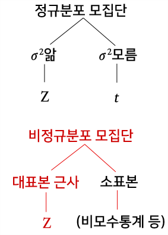

k <- 40
n <- 1000
pbar <- k/n
SE <- sqrt(pbar*(1-pbar)/n)
E <- qnorm(.975)*SE
pbar + c(-E, E) [1] 0.02785455 0.05214545Kim Jae Sook
January 31, 2024
평균이 일반적인 자료들의 대푯값이라면, 표본비율은 \(0\)과 \(1\)로 된 특수한 자료의 평균이다. 즉 비율은 평균의 개념과 같다. 따라서 모비율(한 모집단에서 특정한 속성을 가지는 비율 \(p\))의 구간추정은 모평균의 구간추정방법과 거의 동일하다. 모비율 \(p\)를 추정하기 위하여 \(n\)개의 표본을 추출하여 조사한 결과, ’성공’의 수가 \(X\)라면, 모비율 \(p\)의 점추정량인 표본비율(sample proportion) \(\bar{p}\)은 다음과 같이 구해진다.
\[\bar{p}=\dfrac{X}{n},~X=0, 1, \cdots, n\]
위의 식에서 확률변수 \(X\)는 이항분포를 따른다. 즉, \(X \sim B(n, ~p)\)이다.
그리고 표본의 수 \(n\)이 커지면(표본크기 25~30) 확률변수 \(X\)는 다음과 같은 평균과 분산을 갖는 정규분포를 근사적으로 따르게 된다.
\[X ~ \dot{\sim} ~ N(np, ~np(1-p))\]
따라서 표본비율 \(\bar{p}\)은 근사적으로 다음과 같은 정규분포를 따른다.
\[\bar{p} ~ \dot\sim ~ N \left( p, ~\frac{p(1-p)}{n} \right)\]
다음은 이항분포를 이용할 때와 이항분포의 정규근사를 이용하여 가설검정을 할 때의 R명령어이다. 이항분포를 정규분포로 근사할때는 연속성 수정을 해서 구해야 더 정확하다. 모비율에 대한 가설검정 예제는 10. 하나의 모집단에 대한 가설검정(평균)에서 살펴보자.
binom.test()함수: 이항분포를 이용할때(이산형)
prop.test()함수: 이항분포의 정규근사 이용 시(연속형)
예를 들어, \(X=20\)이라는 이산형 값은 연속적인 수직선 상에서 \((19.5,~ 20.5)\)의 구간을 의미하는 것으로 수정
연속성 수정: 이산형 확률변수의 값 \(X\)를 마치 연속형 확률변수의 값인 것처럼 수정함
pros.test()는 기본적으로 연속성 수정을 하여 가설검정을 수행함
모평균과 모비율의 구간을 추정할때에는 모분산을 알고 있으면 Z값, 모분산을 몰라서 표본분산으로 대체하여 사용할 경우에는 t값을 사용한다. 만일 모집단이 정규분포를 하지 않는 경우는 표본수가 많다면 중심극한정리를 적용하여 근사적으로 Z값을 사용한다. 이때 모분산을 알고 있으면 그것을 사용하고, 모르면 표본분산을 사용한다. 정규분포를 하지 않고 표본수가 적은 경우는 그때 그때 분포 모양에 따라 계산된 값을 사용하거나 비모수통계 방법 등을 이용해야 한다.

[1] 9603.647[1] 3457.313